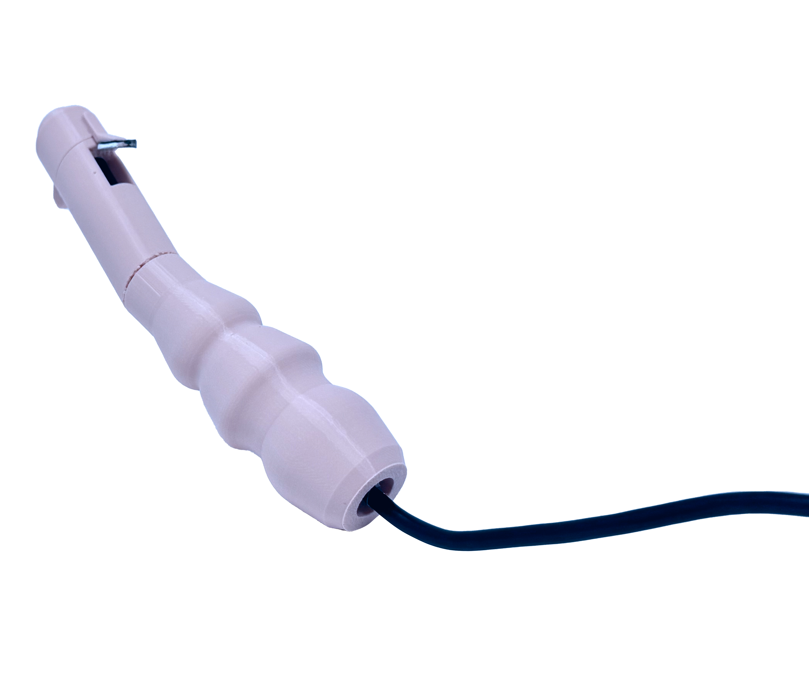
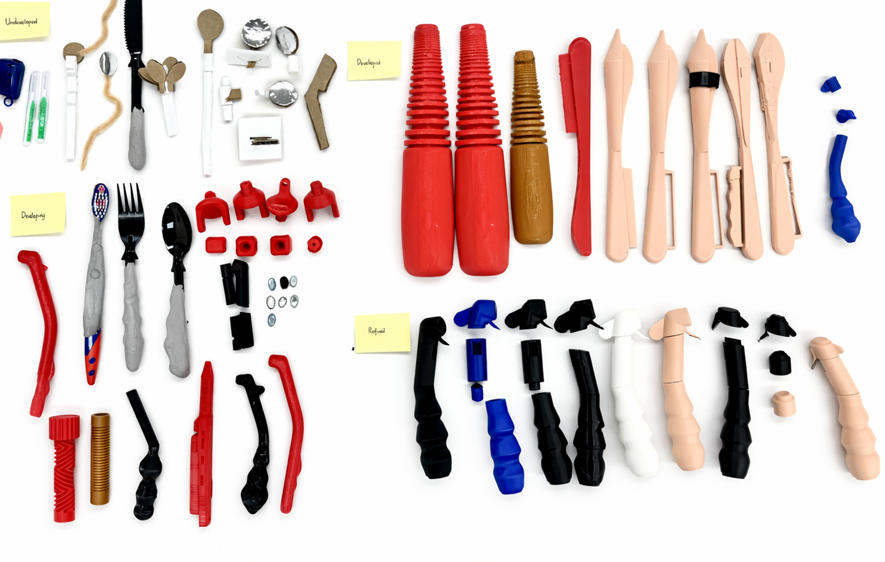
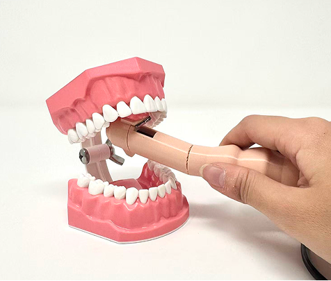
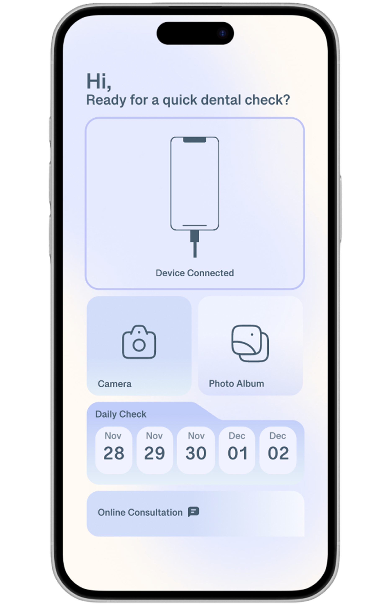
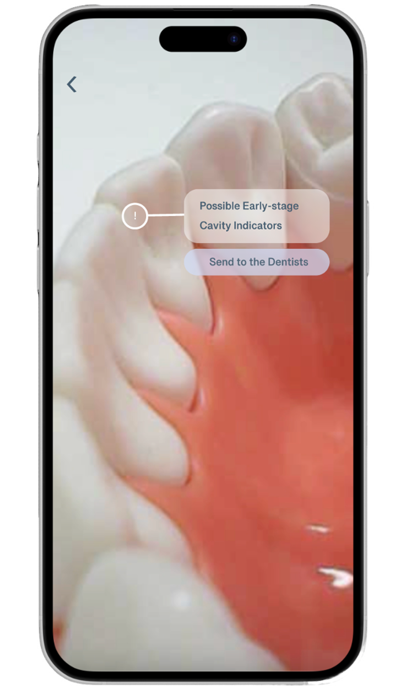
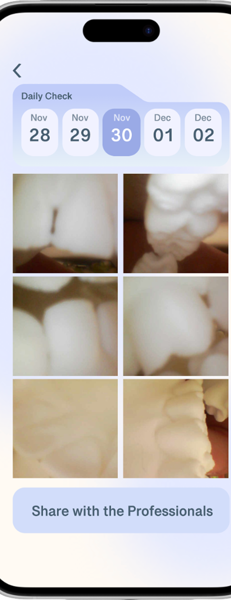
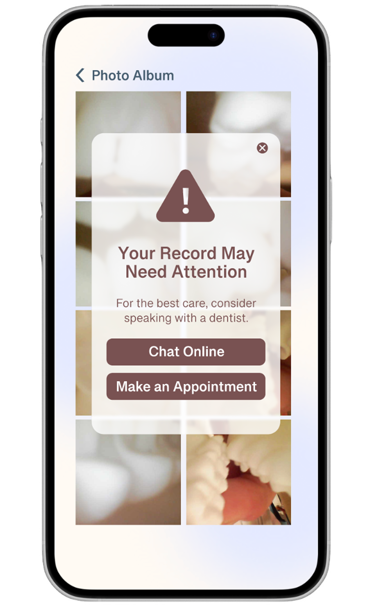
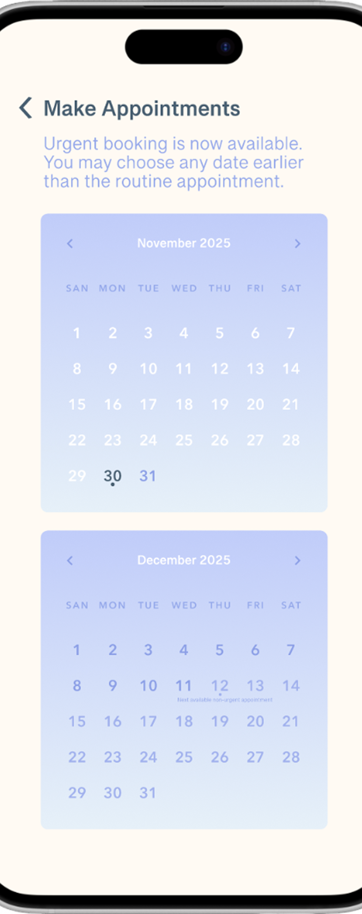
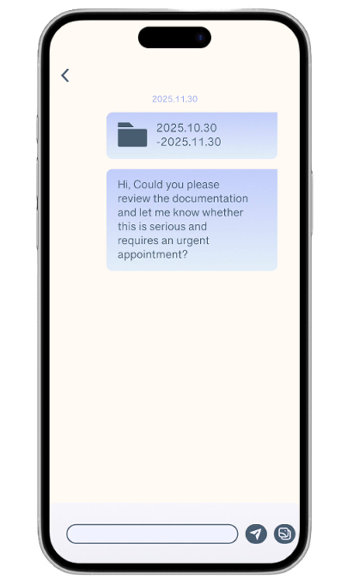

Health Tech · Product Design · 2025
A smart at-home dental camera controlled by tongue movement. The product is paired with an app for real-time analysis and easy sharing with your dentist.

01 · The Problem
Most people inspect their teeth with a bathroom mirror or a phone camera. Back molars, gumlines, and early decay are invisible to the naked eye. This leaves patients anxious, uninformed, and waiting until their dentist visit.
02 · User Research
"It's hard to check my back teeth — I just can't see back there no matter what I do."
Participant 4 · dental-avoidant, 34
"I never know if I should actually go to the dentist or if I'm overreacting."
Participant 7 · 28
"Even when I do see something that looks off, I have no idea if it's serious. I don't speak dentist."
Participant 2 · 41
03 · The Concept
A slim intraoral camera that navigates with tongue-controlled tilt and rotation. This device allows minimal hand movement. The companion app captures, analyzes, and flags anything suspicious.
04 · Hardware
05 · Process
The device went through significant physical and UX iteration — from an unwieldy first prototype to a slim, ergonomic form that users could actually operate hands-free with confidence.

Basic camera on an extendable wand. Users struggled with one-handed control and couldn't navigate to back teeth without gagging.
Slimmer profile, angled tip. Added button controls on the handle. Better reach, but hands were still occupied, which limited natural mouth positioning.
Shifted all controls to tongue-activated sensors. Users reported feeling in complete control — and were able to reach every area of the mouth without assistance.
06 · Final Design
A fully realized physical prototype paired with a companion app — the device handles capture and navigation, the app handles analysis and sharing. Two products, one seamless experience.

Tongue-controlled intraoral camera — 9" wand, 1920 HD, ±45° tilt
A calm, UI designed to reduce anxiety and provide clear visual feedback, plain-language analysis, and one-tap sharing with your dentist.





